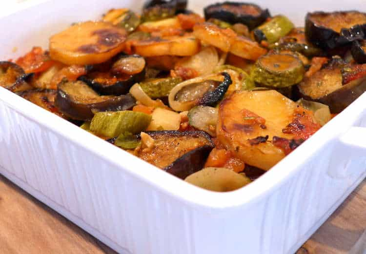

Greek Briam

Description
Simplicity is perfection! This amazing traditional Briam recipe (Μπριάμ) is the brightest example of how Greek
cuisine takes the simplest ingredients and with literally no effort transforms them into a finger licking dish!
Briam is a traditional Greek recipe for mixed roasted vegetables or let me rephrase.. This Greek Briam recipe is
with no doubt the most delicious mixed roasted vegatables you have ever tried!
Ingredients
- 1 Kg ripe tomatoes, chopped.
- 1⁄2 kg potatoes, sliced
- 1⁄2 kg aubergines, sliced
- 1⁄2 kg zucchinis, sliced
- 3⁄4 cup of olive oile
- 1 red onion, sliced
- 2 cloves of garlic, finely chopped
- 2 tbsps chopped parsley
- salt and freshly ground pepper
Steps
-
To prepare this delicious briam recipe, start by preparing your vegetables. Peel and cut the potatoes in
slices.
Wash thoroughly the courgettes and aubergines and slice into 1cm slices. Alternatively you can cut the
vegetables in chunks. Peel the tomatoes and cut into thin slices. (You can also use green bell peppers).
-
To bake the briam use a large baking pan, approx. 30*35cm, so that the vegetables are not layered too deep.
-
Layer the bottom of the pan with sliced tomatoes and season. Place on top the sliced vegetables and season
well.
Sprinkle with the onion and garlic and top with the rest of the tomatoes. Season well, garnish with chopped
parsley and drizzle with olive oil.
-
Cover the briam with aluminum foil and bake in preheated oven at 200C (both top and bottom heating elements
on)
for 1 1/2 to 2 hours. Uncover the briam halfway through cooking time, toss the vegetables and continue
baking
until nicely coloured.
-
Serve this traditional briam dish with salty feta cheese and lots of bread. Enjoy!